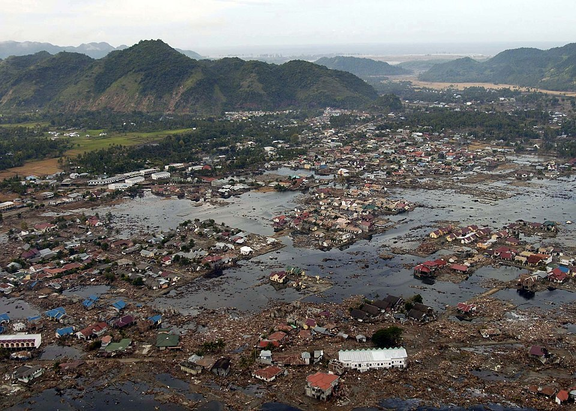
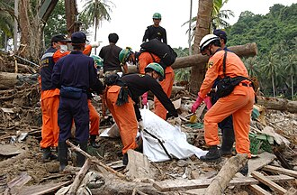
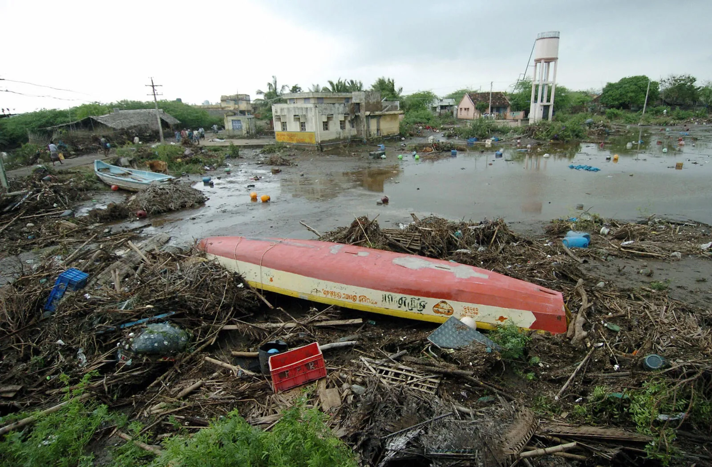

The calm before the storm
At sunrise on the 26th of December, 2004, the beaches of Aceh in Indonesia seemed as ordinary as any other morning. Fishermen checked their nets, tourists walked slowly along the sand, and children splashed in the shallows. The light was golden, soft, and calm. Nothing about the scene suggested that life was about to change forever.[1]
There were signs, but few noticed. The ocean pulled back further than usual, leaving fish and shells stranded on the wet sand. Birds suddenly flew inland in flocks. Some people felt a small trembling underfoot, a rattle that made windows shake. But for most, it was just another morning. [1]
At 07:58 local time, the earthquake came. Later named the Sumatra-Andaman quake, it was among the strongest ever measured—over 9 in magnitude. Deep beneath the water, the seabed shifted several meters, forcing massive amounts of seawater upward. The ocean itself was knocked out of balance, and waves began racing outward in all directions.[1]
The arrival of the wave
The silence came first. The sea drained away, leaving bare stretches of sand where the water had been. Some people went out to explore, curious, picking up shells or taking photos. Then came the roar. Survivors later said it was like a jet engine, or a collapsing building. A dark line on the horizon rose higher and higher as it rushed forward.
Bare twenty minutes after the quake, the first wave hit Aceh. Entire streets and neighborhoods disappeared. Homes, cars, boats, and people were swept away in one violent rush. One survivor called it a “black giant,” a wall of water carrying trees, rubble, and bodies. Those who tried to run found themselves trapped by crumbling buildings or blocked roads. Some climbed onto rooftops or clung to trees. Many never made it.[1]
Two hours later, in Sri Lanka, the ocean struck again. A train filled with passengers was lifted off its tracks and overturned near Peraliya, killing more than a thousand people.[2] The same morning, Thailand was hit. Resorts that had been crowded with holiday visitors were crushed within minutes. Survivors clung to wreckage, trying to stay above the swirling water.[11]
Voices from the disaster
In the immediate chaos, people shouted warnings and prayers. In Banda Aceh, one man remembered:
“Hundreds of people were rushing by the street in front of our house, yelling Air naik! Air naik!
Allahuakbar! Allahuakbar! ("The water is rising, the water is rising! God is Great! God is Great!").”[3]
Another survivor told The Guardian:
“We saw bodies in the water. My house had been swept away. I had lost my wife and my son and I didn’t know what to do.”[4]
For some, survival was pure luck. A sofa carried one person to safety. Others clung to branches or wreckage until they could reach higher ground. Many drifted for hours before being found.[4]
The aftermath
Hours later, when the sea finally settled, the destruction became visible. In Aceh alone, more than 170,000 were dead. Across 14 countries, the total death toll reached close to 230,000. Entire villages had been wiped away, families torn apart with only one or two survivors left.[10][1]
In Sri Lanka, half a million people were displaced. Along India’s Tamil Nadu coast, thousands were killed. Thailand lost both locals and tourists, many carried out to sea before help could arrive. In the Maldives, whole islands became unlivable.[6][7]
The disaster destroyed far more than lives. Roads, bridges, electricity, water systems—ruined. Farmland turned salty and useless. Fishing boats and nets, the heart of coastal communities, smashed to splinters. The United Nations later estimated that more than 100,000 small and medium businesses simply vanished.[8]
In the days that followed, another crisis unfolded. Survivors lacked food, clean water, and medical care. Aid camps were set up, but with so many people spread across such a wide area, supplies were thin. Disease was a constant danger. Mass graves were dug while families searched endlessly for missing loved ones.[5][12]
A global response
In the weeks and months after the tsunami, the world responded. Governments sent billions in aid. Individuals donated what they could. Military helicopters and ships from the U.S, India, Australia, and others ferried supplies and rescued survivors.[13][9]
The tragedy also forced change. In 2006, the Indian Ocean Tsunami Warning and Mitigation System was created. Seismic sensors, coastal sirens, and community training were put in place. Local evacuation drills became common. The disaster had shown, beyond doubt, that even a few minutes of warning could save thousands.[8]
Lessons learned
Twenty years later, the memory of the tsunami is still sharp. It is remembered as one of the deadliest natural disasters in modern times, but also as proof of human resilience. Survivors rebuilt their lives, even with grief that never went away. Communities grew more alert to the signals of nature. Scientists and governments worked together to prepare for the next time the ocean decides to rise.